Embed Any Document Plus Documentation by AWSM Innovations v1.0
Embed Any Document Plus - WordPress Plugin
Thank you for purchasing our plugin. If you have any questions that are beyond the scope of this help file, please feel free to email via our user page contact form here. Thanks so much!
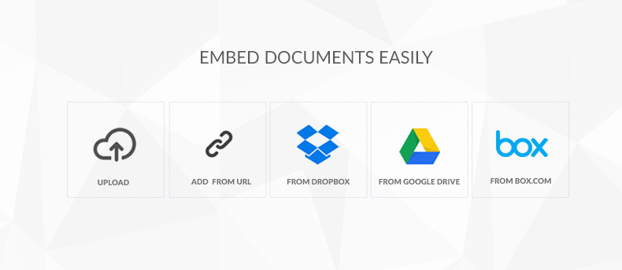
'Embed Any Document Plus' WordPress plugin lets you upload and display your documents easily in your WordPress website without any additional browser plugins like Flash or Acrobat reader. 'Plus' version allows you to embed files from your Dropbox, Google Drive and Box.com accounts.
Similar to services like Scribd and SlideShare, 'Embed Any Document Plus' will allow you to embed supported files directly into your page or post, not requiring the user to have any other software installed to view the contents.
What can you use this plugin for?
Embed PDF Files: Do you have a PDF file you want to let people read from your website? Simply embed the document using Embed Any Document Plus. You can even run a website like Scribd using this plugin.
Embed PowerPoint Presentations: Do you want to add your keynotes in your website and let your visitors browse them like in SlideShare? This is the right plugin for you.
Embed Word and Excel documents: It is not so common to see a Word or Excel document embedded in a website. That's because there were no any easy way to do it. Embed Any Document Plus does that too. Check our the live demo.
Quick Start Quide
Install Plugin > Configure APIs > Start Embedding Documents. Yes, that's all!
A novice or an expert, you will not need anything more than 5 minutes to get this plugin installed and working in your WordPress website. Read the documentation carefully before you start. We agree that API configuration is a little bit tricky and looks 'high-tech'. Don't worry about it. Our step-by-step guide will help you to tackle it easily.
Live Demo Watch Video Tutorials Get Support
A. Installing Plugin
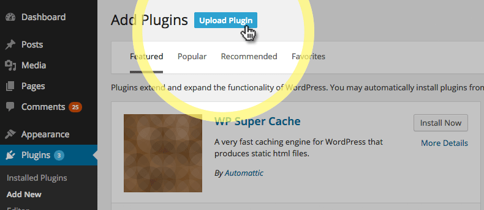Before beginning the installation and configuring of the plugin, you must first have WordPress already installed on a server. Once you have setup a copy of WordPress, there are two ways you can go about installing the plugin:
- FTP Upload: Unzip the download and upload the plugin directory /embed-any-document-plus/ into your WordPress plugins directory /wp-content/plugins/
- WordPress Upload: This is definitely the easiest route for most. Simply navigate to Plugins› Add New Plugin› Upload. Click the "browse" button and locate the still zipped plugin folder. The plugin will be uploaded and installed in a matter of seconds.
B. Embedding Documents
Embed Any Document is integrated seamlessly into the post editor. With a click on 'Add Document' button it lets you upload documents directly into media library and embed them. Currently the plugin supports five methods for adding documents.
Click on the 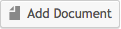 button right next to 'Add Media' button in visual editor to get started.
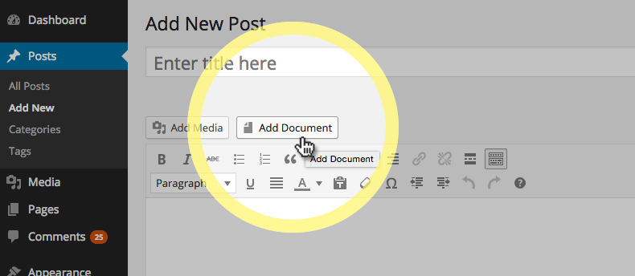It will open a popup with different options
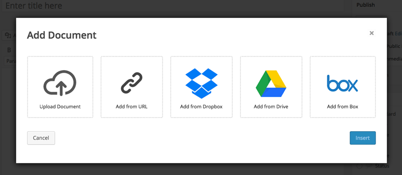Insert Document Popup with advanced options.
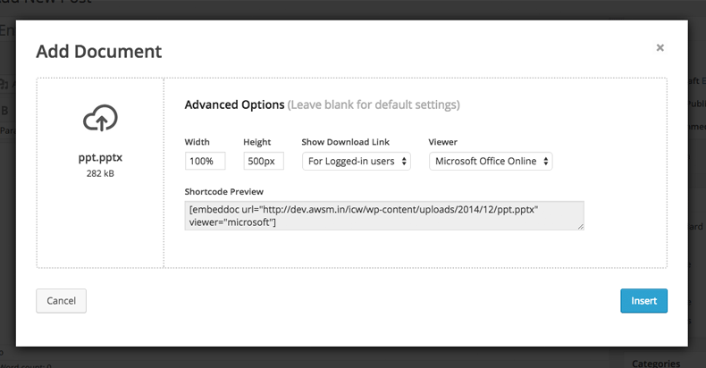B.1. Upload A Document
This option lets you directly upload documents to your media library. The files will be uploaded to wp-content/uploads folder.
B.2. Add from External URL
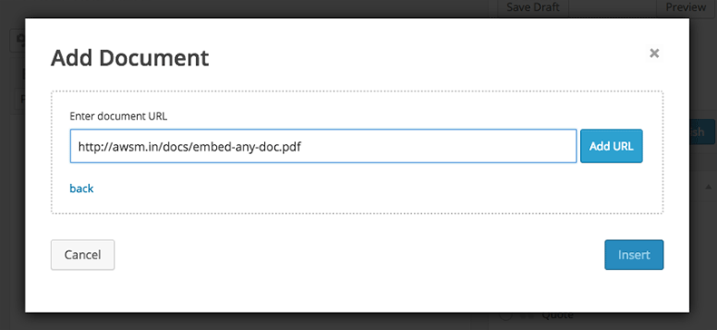Using this option you can add files hosted on a different server. Just insert the direct link in the text box and click on the Insert button. The document will be embedded instantly. The plugin will verify the URL for supported formats before you can insert it.
B.3. Add from Dropbox
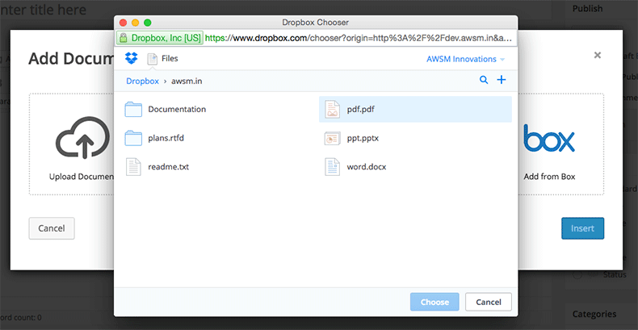This option lets you access and embed documents hosted in your Dropbox. To activate the feature you will need to create an API for your Dropbox account and insert in Embed Any Document Cloud Settings panel.
B.3. Add from Google Drive
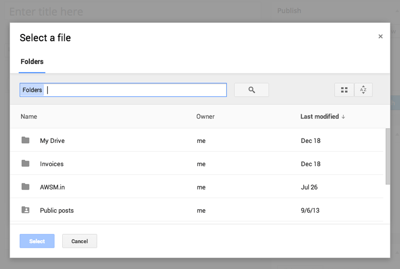This option lets you access and embed documents from your Google Drive. You have to either create a document in your Google Drive account or upload an existing document before you can embed. Your document must be publicly accessible to be able to view on your website.
B.3. Add from Box.com
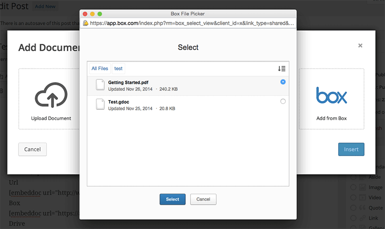Embed your files hosted on the Box.com cloud service. Unlike the other options here the files will be displayed in Box.com's native viewer.
C. Settings & Options
You can access the settings page from 'Settings > Embed Any Document Plus'
C.1. General Settings
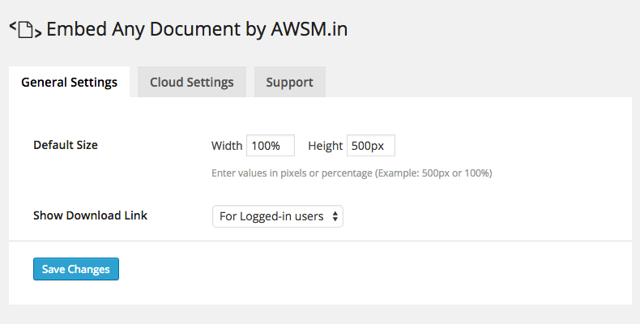You can set default size and download link options from this page
C.2. Cloud Settings

In order to make the cloud options work you need to generate API keys for the respective services and paste them here. How to obtain keys.
C.3. Support
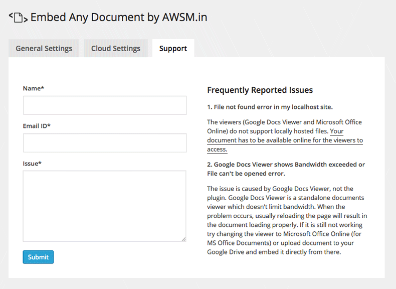Reaching us can't be easier than this! Feel free to use this tab any time.
D. Configuring Cloud APIs
To be able to embed documents from your cloud accounts you need to get an API key from the respective service providers and add them to Embed Any Documents Cloud Settings page.
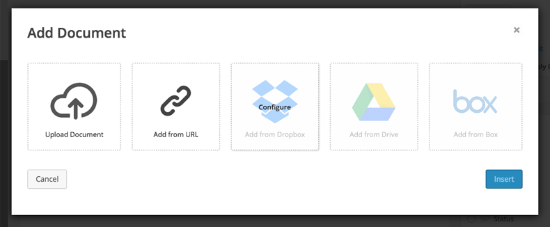D.1. Getting Dropbox API Key
You need to create a 'Drop-ins' App in Dropbox to get an API Key. Follow the steps below to get your API key.
- Click on this link
- Choose 'Drop-ins app'
- Enter a name for the app
- Click on 'Create App' button
- In App Settings page, add the domain name in which you have installed the plugin
- Copy the API key
D.2. Getting Google Drive API
This is a bit tricky. You need to add a Client ID also along with API key for Google Drive. We highly recommend you to watch our video tutorial before you proceed.
- Click this link
- Click on 'Create Project' button
- Give your project a name and click on 'Create'
- Click on 'APIs & Auth' link in the left sidebar
- Turn on Drive API and Google Picker API
- Click on 'Credentials' link in the left sidebar
- Click on 'Create Client ID' button
- Choose 'Web Application' in the popup and click on 'Configure consent screen' button
- In consent screen choose your email address and enter a product name and click on 'Save'. You can leave the rest of the fields blank.
- On the following screen enter the domain name in which you have installed the plugin and click on 'Create Client ID' button
- Now you have your Client ID created. Now let's create your API key! Click on 'Create new key' button under 'Public API Access'
- Click on 'Browser Key' button in the popup
- Again enter the domain name in which you have installed the plugin and click on 'Create' button
- Now copy Client ID and API Key from the 'Credentials' page and paste them in your website's 'Cloud Settings' page
D.3. Getting Box.com API
Getting an API key for your Box.com account is a rather simple thing. Click on the link below to watch video tutorial.
- Click on this link
- Login to your Box.com Accont
- From the following screen Select 'Box View'
- Enter a name for app and click 'Create Application'
- Click 'Configure your application' button from the following screen
- Find your API key and copy/paste it in your plugin settings page.
E. The Viewers
The plugin supports three kinds of viewers.- Google Docs Viewer
- Microsoft Office Online
- Box.com Native
E.1. Google Docs Viewer
The Google Docs Viewer is an online service from Google to view and embed various types of document files. Embed Any Document plugin primarily uses Google Docs Viewer service to embed and display your documents.
Supported file types
- Microsoft Word (docx, docm, dotm, dotx)
- Microsoft Excel (xlsx, xlsb, xls, xlsm)
- Microsoft PowerPoint (pptx, ppsx, ppt, pps, pptm, potm, ppam, potx, ppsm)
- Adobe Portable Document Format (pdf)
- Text files (txt)
- TIFF Images (tif, tiff)
- Adobe Illustrator (ai)
- Scalable Vector Graphics (svg)
E.2. Microsoft Office Online
Office Online is an online tool from Microsoft to easily embed and view Microsoft Office Documents. It is the best tool for viewing Office Documents online.
Supported file types
- Microsoft Word (docx, docm, dotm, dotx)
- Microsoft Excel (xlsx, xlsb, xls, xlsm)
- Microsoft PowerPoint (pptx, ppsx, ppt, pps, pptm, potm, ppam, potx, ppsm)
E.3. Box.com Native Document Viewer
Files hosted in your Box.com account will be embedded using Box.com's native UI. You cannot change it to Google Docs Viwer or Microsoft Office Online.
F. Shortcode & Attributes
Example of a shortcode supported by Embed Any Document plugin is below
[embeddoc url="http://awsm.in/ppt.pptx" width="550px" height="700px" download="none" viewer="microsoft"]
Attributes are explained below
url |
File URL Accepted Arguments: valid file url |
width |
Width of document either in px or in %. Accepted Argument Examples: 90% , 590px etc. |
height |
Height of document in px. Accepted Argument Example: 500px. |
download |
Show or hide download link. Accepted Arguments: all - For all user logged - For logged user none - no download |
viewer |
Service provider Accepted Arguments: google, drive, box, microsoft |
G. FAQs
1. How do I add documents?
Once the plugin is activated you can find 'Add Document' button in your WordPress visual editor. Just click on that and follow your heart.
2. File not found error in my localhost site!
The viewers (Google Docs Viewer and Microsoft Office Online) do not support locally hosted files. Your document has to be available online for the viewers to access.
H. Known Issues
1. Google Docs Viewer shows Bandwidth exceeded or File can't be opened error.
The issue is caused by Google Docs Viewer, not the plugin. Google Docs Viewer is a standalone documents viewer which doesn't limit bandwidth. When the problem occurs, usually reloading the page will result in the document loading properly. If it is still not working try changing the viewer to Microsoft Office Online (for MS Office Documents) or upload document to your Google Drive and embed it directly from there.
2. Large files are not working
The viewers can handle files of a limited size only (Maximum 8MB for Google Docs Viewer and 10MB for Microsoft Office Online). Try your best to keep the documents under 5MB. Check out some ways to reduce file size. If you have a larger file you want to embed in your website, try uploading it to your Google Drive or Box.com account and embed directly from there.
For more information and instructions visit our website..
This is an AWSM Project.